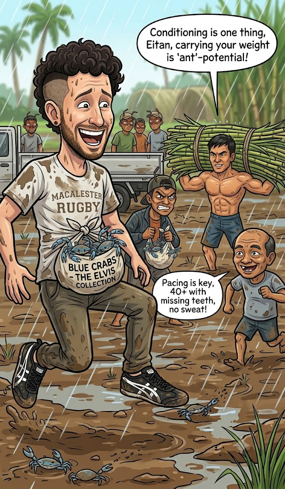

Eitan on Strength
Originally written July 10, 2010, 6:58 AM

When I was younger, I used to ruminate constantly on the precarious, fragile nature of human beings—how easily our physical frames can be bruised, broken, or even fatally compromised by forces entirely outside our own immediate control. I used to imagine how effortlessly a mechanical system could fail and unleash chaos, wreaking severe havoc on the bodies of anyone standing nearby. Jagged shrapnel, toxic acid rain, the simple acceleration of gravity; it felt like we were surrounded by an infinite roster of invisible enemies and industrial liabilities waiting to tear us apart.
These days, laboring on a working plantation, I have been forced to witness firsthand exactly how incredibly resilient and durable a human being can actually be. Sure, our biology remains an easy, vulnerable target for modern weapons specifically engineered to destroy us. But if you strip away those artificial agents of violence, it turns out that destroying a human body is a mighty difficult task.
The realization hit me recently while I was walking along the shoulder of a rural highway, navigating a stretch close to a local cemetery I wanted to explore. A commercial flatbed truck drove past—seemingly identical to any other truck on the road. But as it rattled past, something clicked cleanly into place inside my mind. It was a massive vehicle featuring an expansive open bed, and outside of the driver in the cabin, it was entirely empty save for three laborers standing straight up in the rear, surrounded by steel side panels tall enough to swallow them whole. I looked at that vehicle and realized that while the bed was technically devoid of commercial freight, it was overflowing with an immense kinetic potential—power generated not by the displacement of the diesel engine, but by the biology of the men riding inside. Much like a colony of ants capable of effortlessly lugging multiples of their own mass across the forest floor, I knew with absolute certainty that these laborers, as lean and underfed as they appeared to the eye, possessed the structural capacity to carry their own physical weight many times over through a succession of focused trips. This raw carrying potential, derived strictly from the limits of our own musculature, struck me as something fundamental to the core of who we are.
I have been clinically diagnosed with scoliosis, a spinal curve that historically caused me to shy away from heavy manual labor or intense physical exertion. Yet, operating out here on the farm, I find myself actively accepting absolutely any assignment dropped on my schedule. Sure, it is grueling, exhausting work, but that doesn't mean my frame is incapable of executing it. I am honestly surprised by how exceptionally well my body performs, even when the heat clears the 120°F (48°C) mark out under the direct glare of the sun. I recognize that articulating this out loud sounds remarkably narcissistic—and perhaps it is, but then again, nearly all personal essay writing carries a baseline of narcissism—but I am genuinely amazed by my own ability to keep up with the pace.
What surprises me infinitely more, however, is how effortlessly the people I work alongside manage to surpass me. The average Visayan farmer on our payroll stands a modest 150 centimeters tall, bears plenty of missing teeth, and survives on a razor-thin salary. The absolute youngest hand in our sector is maybe twenty-four years old, while the vast majority have easily cleared forty. Yet, time and time again, starting from the exact same baseline marker at the edge of the field to plant parallel rows of sugarcane, they completely blow past my position—and they aren't moving at a slow, measured crawl; they are navigating the mud at a remarkably fast clip. You could easily write off their velocity as the result of decades of vocational experience, muscle memory, and localized conditioning—assets of which I possess absolutely none—but I remain entirely spellbound by their sheer, unbroken endurance. There are a couple of older men in the crew who are missing nearly all their teeth and appear severely malnourished due to their anatomical inability to properly chew solid food; yet they still manage to outpace me effortlessly hour after hour, without ever appearing to break a sweat.
I won't romanticize their reality or pretend that these laborers live perfect lives, but observing their daily output forces me to completely re-evaluate and discard my lifelong fears regarding the inherent frailty of our species. I witnessed a parallel physical transformation with my own mother a few years ago when she was struck by lymphatic cancer. I watched her morph from an upbeat, fiercely competitive, and exceptionally active woman into a fragile figure I could barely recognize, someone who could initially barely cross a room without support. I was terrified by how aggressively the disease ravaged not only her physical cells but her entire baseline personality, turning a historical pillar of solid granite into an incredibly delicate porcelain doll. Yet, after nearly a year of grueling chemotherapy, her body successfully purged the malignancy. Slowly, methodically, she began reclaiming her vital energy. Within another short year, she had completely restored herself to her pre-clinical baseline, and I watched her return to the world with a fierce vengeance, working even harder than before her diagnosis. I was awed by the sheer velocity with which she recaptured her physical strength, emerging powerful, independent, and entirely willing to continue battling the daily hurdles of life after defeating such a formidable, terrifying enemy.
It is incredible to realize that the human machine is capable of navigating both of these extreme polarities—swinging from absolute decay back to absolute power. I am deeply encouraged to witness the outer margins of the human body and discover what we can successfully accomplish on this earth, operating purely on raw, physical willpower before our intellect even steps in to complicate the effort. I want to see exactly how far our biology can take us, how many consecutive hours we can labor, and how dynamically we can transform the physical landscape surrounding our lives through the simplest maneuvers imaginable—like using two bare hands to drop a single seed into the dirt.